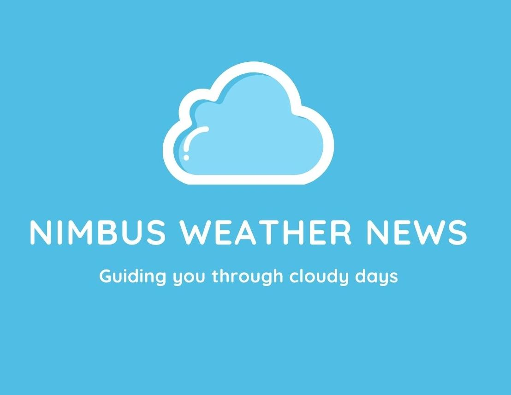

The purpose is to provide information about the weather to the visitors of three specific cities (Preston, Soda Springs, Fish Haven). Such as the temperature, any important climatical event that is happening there, and small articles about the climate. here will also be images to cover the local news. It will also have a storm center, where there will be storm coverage (images, news, articles) and suggestions of places to avoid.
